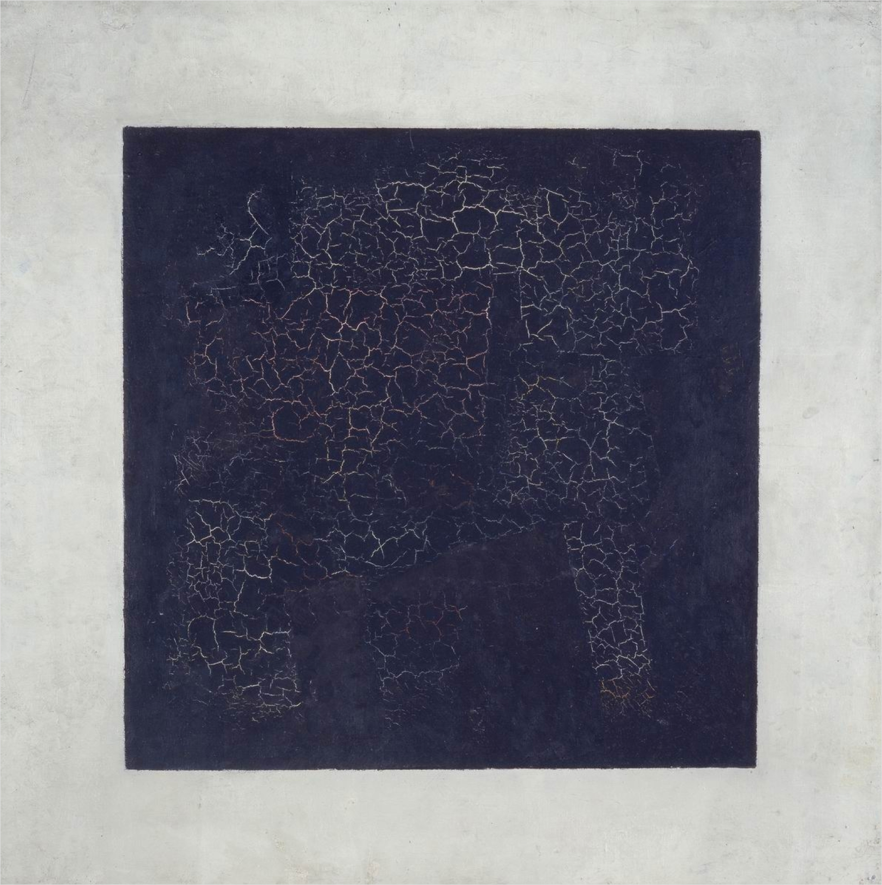
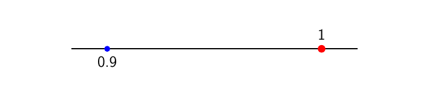
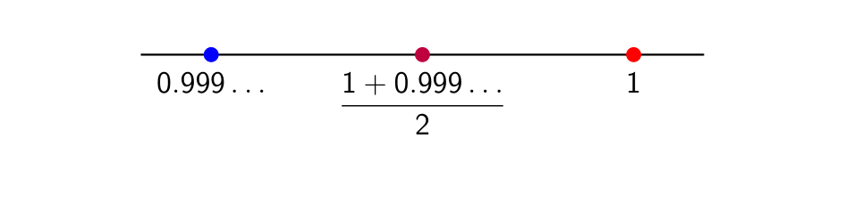
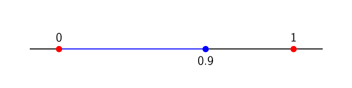

0,999… = ???#

Ο πίνακας Μαύρο Τετράγωνο του Kazimir Malevich.#
Κλασσικό σημείο διαμάχης σε διάφορες τάξεις αποτελεί η τιμή της παράστασης \(0.999\ldots=0.\overline{9}\) . Κάθε τέτοια διαμάχη είναι, σαφώς, και μία ευκαιρία για συζήτηση στην τάξη έτσι ώστε να έρθουν στην επιφάνεια παρανοήσεις σε σχέση με τους πραγματικούς αριθμούς και τη φύση τους - τουλάχιστον σε σχέση με το συμβατικό μοντέλο που έχουμε στο μυαλό μας. Ωστόσο, το ερώτημα «με τι ισούται το \(0.999\ldots\) ;» ίσως και να κρύβει πολλά περισσότερα πράγματα από όσα να υποπτευόμαστε από πίσω του. Στην παρούσα ανάρτηση θα προσπαθήσουμε να εξερευνήσουμε κάποια από αυτά καθώς και να εξετάσουμε αν μία μη συμβατική θεώρηση των πραγματικών αριθμών είναι ικανή να ερμηνεύσει κάποιες από τις συνήθεις παρανοήσεις των μαθητών - τουλάχιστον σε θεωρηττικό επίπεδο, για αρχή.
Μία «συμβατική» αντιμετώπιση#
Αρχής γενομένης, για να συζητήσουμε για το παραπάνω σύμβολο πρέπει πρώτα να αποσαφηνίσουμε πώς αυτό ερμηνεύεται - με άλλα λόγια, τι υπονοούν αυτές οι τρεις τελείες. Η συνήθης ερμηνεία είναι, γράφοντας \(x=0.999\ldots\) , να υπονοούμε ένα δεκαδικό ανάπτυγμα που να περιέχει άπειρα στο πλήθος «9». Με άλλα λόγια, υπονοούμε τον αριθμό:
Με αυτόν τον συμβολισμό κατά νου, τουλάχιστον για αρχή, είναι σαφές ότι \(x=1\) αφού:
Ωστόσο, το παραπάνω δεν μπορεί, σε αυτή τη μορφή, τουλάχιστον, να αποτελέσει μία τυπική σχολική απόδειξη, μιας και απαιτείται η κατανόηση της έννοιας της σειράς και, άρα, του ορίου ακολουθίας, πράγμα που, εν γένει, ξεφεύγει από την ύλη των περισσότερων τάξεων της δευτεροβάθμιας.
Με δεδομένο το παραπάνω, η συνήθης απόδειξη ότι \(0.999\ldots=1\) στα σχολικά βιβλία έχει ως εξής. Αρχικά, θέτουμε \(x=0.999\ldots\) και στη συνέχεια παρατηρούμε ότι:
Σαφώς, στο παραπάνω γίνεται μία μεγάλη αβαρία ως προς το πώς μπορέσαμε και αφαιρέσαμε δύο αριθμούς με άπειρο δεκαδικό ανάπτυγμα, δεδομένου ότι ο «παραδοσιακός» αλγόριθμος της κάθετης αφαίρεσης ξεκινά από το τέλος (δεξιά) του αναπτύγματος και συνεχίζει προς την αρχή (αριστερά). Ένας κάπως πιο τυπικός τρόπος να κάνουμε την αφαίρεση \(9.999\ldots-0.999\ldots\) θα ήταν να τη γράψουμε ως εξής:
Με την παραπάνω γραφή είναι αρκετά σαφέστερο ότι, επί της ουσίας, τα «9» που εμφανίζονται στο δεκαδικό μέρος κάθε αριθμού αφαιρούνται μεταξύ τους με αποτέλεσμα να μένει μόνο το ψηφίο των μονάδων. Άλλωστε, η απαλοιφή των αντιθέτων, ακόμα κι αν εδώ γίνεται για άπειρους στο πλήθος όρους, είναι σχετικά «εύπεπτη» ενέργεια.
Αν και ο παραπάνω τρόπος αφαίρεσης αριθμών με άπειρο δεκαδικό μέρος στην περίπτωσή μας φαίνεται αρκετά πειστικός, η όλη ιδέα της συνήθους σχολικής απόδειξης είναι καθαρά τεχνική και επί της ουσίας δε φαίνεται να έχει μεγάλη διδακτική αξία. Πράγματι, ενώ αποδεικνύει με τον τρόπο της την αλήθεια του ισχυρισμού \(0.999\ldots=1\) , επί της ουσίας δεν αποκαλύπτει κάτι για τους μηχανισμούς που «κρύβονται» πίσω από αυτήν την ισότητα. Για την ακρίβεια, περισσότερο θολώνει τα νερά παρά ρίχνει φως σε ένα πολύ ενδιαφέρον κομμάτι των σχολικών μαθηματικών. Έχει, επομένως, νόημα, να αναζητήσουμε κι άλλες αποδείξεις στα πλαίσια της σχπλικής ύλης ή λίγο μακριά από αυτή, που να μπορούν να είναι περισσότερο διδακτικές.
Αν και σε καμία τάξη δεν έχουμε στη διάθεσή μας τον ορισμό του ορίου - αυτό είναι ένα μικρό ψέμα, διότι ο ορισμός του ορίου ακολουθίας στην Γ” Λυκείου παραμένει πεισματικά εντός ύλης - μπορούμε να «κλέψουμε» ελαφρώς δεχόμενοι το εξής ως «αξίωμα»:
Αν για έναν πραγματικό αριθμό \(a\in\mathbb{R} &fg=362e77&bg=d9d9d9\) ισχύει \(\|a|<\varepsilon &fg=362e77&bg=d9d9d9\) για κάθε \(\varepsilon>0 &fg=362e77&bg=d9d9d9\) τότε \(a=0 &fg=362e77&bg=d9d9d9\) .
Το παραπάνω δεν είναι ότι περιγράφει και κάποια αξιοσημείωτη ιδιότητα των πραγματικών αριθμών, τουλάχιστον όχι με μια πρώτη ματιά. Διότι, αυτό που μας λέει είναι ότι αν η απόλυτη τιμή ενός αριθμού είναι μικρότερη από κάθε θετικό αριθμό τότε ο αριθμός αυτός δεν μπορεί παρά να είναι μηδέν. Με άλλα λόγια, αν ένας αριθμός είναι πιο κοντά στο μηδέν από κάθε άλλον θετικό αριθμό τότε θα είναι μηδέν - πιο συνοπτικά: δεν υπάρχουν μη τετριμμένα απειροστά.
Αυτό, τώρα, μπορεί στην περίπτωσή μας να υποκαταστήσει επαρκώς τον ορισμό του ορίου. Αρχικά, ας παρατηρήσουμε ότι μπορούμε, φαινομενικά πολύ ασθενέστερα, να υποθέσουμε το παρακάτω - που είναι, ωστόσο, ισοδύναμο με το αρχικό:
Αν για έναν πραγματικό αριθμό \(a\in\mathbb{R} &fg=362e77&bg=d9d9d9\) ισχύει \(\|a|<10^{-k} &fg=362e77&bg=d9d9d9\) για κάθε \(k\in\mathbb{N} &fg=362e77&bg=d9d9d9\) τότε \(a=0 &fg=362e77&bg=d9d9d9\) .
Ουσιαστικά, δε χρειάζεται να είναι η απόλυτη τιμή ενός αριθμού μικρότερη από κάθε θετικό αριθμό, παρά μόνο από θετικούς αριθμούς που είναι απεριόριστα κοντά στο 0, όπως, ας πούμε, οι αριθμοί:
Συνεπώς, μπορούμε να αρκεστούμε σε αυτούς και να κάνουμε τη ζωή μας, όπως θα δούμε, αρκετά πιο εύκολη. Ας θεωρήσουμε, τώρα, τους αριθμούς:
Ουσιαστικά, οι \(a_n\) είναι οι αριθμοί που έχουν ακριβώς \(n\) στο πλήθος «9» στο δεκαδικό τους μέρος - ξεκινώντας από τα δέκατα - και τίποτα περισσότερο. Είναι σαφές τώρα ότι για κάθε θετικό ακέραιο \(n\) ισχύει:
Από το παραπάνω μπορούμε να συμπεράνουμε, έπειτα από λίγες πράξεις:
για κάθε \(n=1,2,\ldots\) . Τώρα, παρατηρούμε ότι για κάθε \(n\) έχουμε:
Συνεπώς, έχουμε ότι:
για κάθε \(n=1,2,\ldots\) , συνεπώς, από τα παραπάνω, θα ισχύει ότι \(1-0.999\ldots=0\) , δηλαδή \(0.999\ldots=1\) , όπως θέλαμε.
Ουσιαστικά, δείξαμε ότι το \(0.999\ldots\) και το \(1\) βρίσκονται οσοδήποτε κοντά θέλουμε, συνεπώς θα συμπίπτουν. Εισάγοντας μία έννοια «κίνησης» μπορούμε να πούμε ότι τα \(a_n\) παρασύρουν τον \(0.999\ldots\) στην πορεία τους προς το \(1\) - μία απλή ιδέα, αν το καλοσκεφτούμε - όπως φαίνεται και στο παρακάτω σχήμα:

Πλησιάζοντας τη μονάδα…#
Είναι εμφανές, τώρα, πως επειδή ο \(0.999\ldots\) είναι «εγκλωβισμένος» ανάμεσα στο 1 και τα \(a_n\) , καθώς το \(n\) μεγαλώνει αυθαίρετα και συνακόλουθα τα \(a_n\) προσεγγίζουν απεριόριστα πολύ το \(1\) και, όπως είπαμε, «συμπαρασύρουν» μαζί τους και τον \(0.999\ldots\) .
Μία «μη συμβατική» ματιά…#
Ωραία όλα αυτά και σίγουρα χρήσιμα όταν θέλουμε να εξηγήσουμε κάπως πιο αυστηρά και να φωτίσουμε διάφορα ζητήματα γύρω από το γιατί \(0.999\ldots=1\) . Ωστόσο, αρκετά παιδιά δείχνουν ιδιαίτερα δύσπιστα σε σχέση με το γεγονός αυτό, ακόμα κι έπειτα από εκτενή συζήτηση. Ένα από τα κύρια επιχειρήματα που διατυπώνουν είναι ότι ο \(0.999\ldots\) δεν είναι ίσος με \(1\) αλλά «αμέσως» ή «πάααρα πολύ λίγο» πιο πριν από το \(1\) . Το «αμέσως» μπορεί σχετικά εύκολα να απορριφθεί, αφού αν \(0.999\ldots<1\) τότε ο μέσος όρος τους θα βρίσκεται ακριβώς ανάμεσά τους και θα είναι, σαφώς, πιο κοντά στο \(1\) από ό,τι ο \(0.999\ldots\) , άτοπο, όπως φαίνεται και παρακάτω:

Δεν υπάρχει αμέσως προηγούμενος αριθμός από το 1!#
Ωστόσο, το «πάαααρα πολύ λίγο» πριν το \(1\) δεν είναι τόσο απλό. Σαφώς, αν υποθέσουμε ότι το «πάαααρα πολύ λίγο» είναι πραγματικός αριθμός, τότε όσα είπαμε παραπάνω μας καλύπτουν. Αν όμως το «πάαααρα πολύ λίγο» εκφράζει, με έναν απλοϊκό τρόπο, μία απειροστή απόσταση; Με άλλα λόγια, έχει βάση να θεωρήσουμε ότι ένα παιδί, λέγοντας ότι το \(0.999\ldots\) διαφέρει από το \(1\) «πάαααρα πολύ λίγο», εννοεί ότι απέχει όχι κατά κάποιον πραγματικό αριθμό, αλλά κατά κάποιο απειροστό;
Σαφώς, σχεδόν κανένας μαθητής δεν εκτίθεται άμεσα στην έννοια του απειροστού κατά τη σχολική του καριέρα. Ωστόσο, είναι πολύ πιθανό αυτό να γίνεται έμμεσα, σε διάφορα άλλα πλαίσια που εμφανίζονται τα μαθηματικά. Για παράδειγμα, στη φυσική γίνεται συχνά λόγος για «πολύ μικρές» μεταβολές μεγεθών, στην προσπάθεια να παρακαμφθεί η έννοια του ορίου συνάρτησης/ακολουθίας. Επίσης, πολλές φορές τα παιδιά τείνουν να βλέπουν καμπύλες, όπως π.χ. ο κύκλος, σαν σύνθεση πολλών μικρών ευθυγράμμων τμημάτων «απείρως μικρών». Πολύ συχνά, μάλιστα, σε ένα μάθημα γεωμετρίας μπορεί να διατυπωθεί η χαλαρή αναλογία μεταξύ ενός κύκλου με ένα κανονικό πολύγωνο με άπειρες πλευρές ή, γενικότερα, μίας καμπύλης με μία τεθλασμένη γραμμή που συντίθεται από πολλά απειρουστά ευθύγραμμα τμήματα.
Πέρα από την καθημερινή εμπειρία της τάξης, και η ίδια η ιστορική εξέλιξη των εννοιών του απειροστικού συνηγορεί υπέρ της «ευκολίας» με την οποία προσλαμβάνονται τα απειροστά σε σχέση με τους πιο αυστηρούς εψιλοντικούς ορισμούς των Weierstrass και Cauchy. Ιστορικά, οι ιδέες των απειροστών εμφανίστηκαν και χρησιμοποιήθηκαν αρκετά νωρίτερα από μεγάλους μαθηματικούς, όπως και οι ιδέες γενικότερα ποσοτήτων όπως οι άπειροι αριθμοί - ιδιαίτερα από τον Euler. Δε θα ήταν λοιπόν παράλογο να εμφανίζονται τέτοιες ιδέες και σε μαθητές με μεγαλύτερη συχνότητα από ό,τι αναμένουμε, ίσως και σε κάποια στρεβλή μορφή - άλλωστε, αυστηρά οι έννοιες της μη συμβατικής ανάλυσης δε θεμελιώθηκαν παρά λίγο μετά τα μέσα του 20ου αιώνα.
Ειδικότερα στην περίπτωσή μας, η έννοια των άπειρων (στο πλήθος) δεκαδικών ψηφίων δεν είναι απαραίτητο ότι νοηματοδοτείται με τον ίδιο τρόπο από έναν καθηγητή μαθηματικών και από έναν μαθητή. Διότι, μία από τις πιο συνηθισμένες παρανοήσεις των μαθητών είναι να αντιμετωπίζουν το άπειρο σαν έναν «αριθμό», απλώς μεγαλύτερο από κάθε άλλον αριθμό. Υπό αυτήν την έννοια, θα μπορούσαμε να ισχυριστούμε ότι ενώ στο συμβατικό μαθηματικό σύμπαν, ο αριθμός \(0.999\ldots\) αντιστοιχεί στο άπειρο άθροισμα:
στο μυαλό ενός μαθητή είναι πολύ πιθανό, έμμεσα, ο αριθμός \(0.999\ldots\) να αντιστοιχίζεται στο άθροισμα:
όπου ο \(N\) είναι ένας άπειρος υπερπραγματικός αριθμός. Έτσι, χρησιμοποιώντας την αρχή της μεταφοράς - για την οποία θα μιλήσουμε στα πλαίσια της σειράς hyperreals - και τον τύπο αθροίσματος όρων γεωμετρικής προόδου, έχουμε:
Τώρα, δεδομένου ότι ο \(N\) είναι ένας άπειρος αριθμός, το ίδιο θα ισχύει και για τον \(10^N\) , συνεπώς ο \(\frac{1}{10^N}\) θα είναι ένα (θετικό) απειροστό. Έτσι, η διαφορά του \(1\) από τον \(0.999\ldots=1-10^{-N}\) είναι ένα απειροστό, δηλαδή, πιο μικρή από κάθε πραγματικό αριθμό, χωρίς ωστόσο αυτό να σημαίνει ότι είναι οι δύο αριθμοί είναι ίσοι, όπως ακριβώς δείχνουν να θεωρούν πολλοί μαθητές!
Τα παραπάνω φαίνεται να αποτελούν έναν ενδιαφέροντα και καλό «γονότυπο» ο οποίος να ερμηνεύει τον «φαινότυπο» που συχνά εκδηλώνεται μέσα από τις απορίες των μαθητών. Πράγματι, υπό το παραπάνω πρίσμα, όντως το \(0.999\ldots\) δεν είναι ίσο με τη μονάδα, ωστόσο είναι «απεριόριστα» κοντά της - πιο κοντά, μάλιστα, από κάθε άλλον πραγματικό αριθμό. Επιπλέον, το άπειρο πλήθος των «9» που εμφανίζονται στο δεκαδικό ανάπτυγμα του \(0.999\ldots\) δεν υποκρύπτει κάποια έννοια ορίου - όπως συμβαίνει με τη συμβατική περίπτωση - αλλά αντιστοιχεί σε μία ιδιόμορφη έννοια απείρου που εμφανίζει πολλές ιδιότητες που χαρακτηρίζουν τους (πεπερασμένους) αριθμούς. Έτσι, το συγκεκριμένο άπειρο πλήθος από «9» φαίνεται να συνάδει με μία ακόμα συνήθη πεποίθηση των μαθητών περί του απείρου.
Σε αυτήν την περίπτωση, όπου αυτό που βρίσκεται πίσω από τη διαίσθηση και τα λάθη ενός μαθητή είναι μία λανθάνουσα μη συμβατική θεώρηση των πραγματικών αριθμών και όχι κάποια συθέμελα εσφαλμένη εικόνα τους, ανοίγονται πολλοί δρόμοι σε σχέση με το πώς μπορούμε να εργαστούμε για να ανασκευάσουμε αυτήν την εικόνα και να τη φέρουμε εντός της συμβατικής θεώρησης των αριθμών. Αρχικά, ο πιο απλός τρόπος είναι να αρνηθούμε την ύπαρξη των απειροστών στα πλαίσια της θεωρίας του σχολείου μας και να προχωρήσουμε όπως παραπάνω. Για την ακρίβεια, ίσως αυτός να είναι και ο πλέον ενδεδειγμένος τρόπος να δράσουμε σε μία τάξη, μιας και ο χρόνος πολλές φορές δεν επαρκεί για να υπεισέλθουμε σε λεπτομέρειες περί απειροστών και τα συναφή.
Από την άλλη μπορούμε σίγουρα να εργαστούμε και διαφορετικά. Αντί να απορρίψουμε την ύπαρξη απειροστών μπορούμε να κάνουμε μία αναφορά σε αυτά, με όποιον τρόπο θεωρούμε δόκιμο και, ενδεχομένως, να αποσαφηνίσουμε το γεγονός ότι, στα πλαίσια της ύλης που εξετάζεται στα σχολικά μαθηματικά, ο συμβολισμός \(0.999\ldots\) υπονοεί, επί της ουσίας, ένα όριο ή, ακόμα καλύτερα, ένα άπειρο άθροισμα ή, με πιο απλά λόγια, το «τελικό» αποτέλεσμα μίας διαδικασίας. Έτσι, για παράδειγμα, μπορούμε να σκεφτούμε τον \(0.999\ldots\) όπως εικονίζεται παρακάτω:

«Χτίζοντας» τον 0,999…#
Επί της ουσίας, στο παραπάνω υπονοείται πως το «τελικό» αποτέλεσμα του να προσθέτουμε συνεχώς «9» στην ουρά του \(0.9\) είναι να πάρουμε, έπειτα από άπειρα στο πλήθος βήματα, τον αριθμό \(0.999\ldots\) ο οποίος, σαφώς, προσεγγίζει τη μονάδα - και με ένα λίγο πιο αυστηρό επιχείρημα, μπορούμε να δείξουμε ότι είναι και ίσος με αυτήν.
Προφανώς, τα παραπάνω δεν αποτελούν μονόδρομο στο πώς να χειριστεί κανείς σε μία τάξη τις διάφορες παρανοήσεις που εμφανίζονται κατά την απόδειξη της ισότητας \(0.999\ldots=1\) αλλά απλώς κάποιες προτάσεις που έχουν ως στόχο να αναδείξουν πώς ένα τόσο απλό ερώτημα αναδεικνύει διάφορες πολύ ετερόκλητες όψεις των πραγματικών αριθμών καθώς επίσης και μη συμβατικές, αλλά ιστορικά ακριβείς, θεωρήσεις τους.
Μέχρι την επόμενη φορά, καλημέρα!